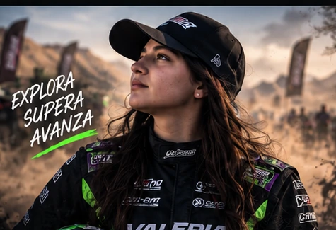
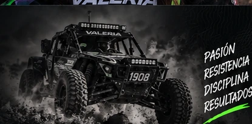
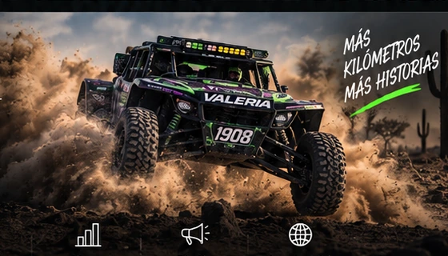

OFFROAD · PASIÓN · DISCIPLINA
VALERIA RACING 1908
DESIERTO HOY. GRANDES METAS MAÑANA.
Una historia construida entre polvo, velocidad y determinación. Un espacio para reunir trayectoria, carreras, contenido y aliados en un solo lugar.
EL DESIERTO
NOS UNE
GRACIAS A QUIENES HACEN ESTE CAMINO POSIBLE
SPONSOR 01
SPONSOR 02
SPONSOR 03
SPONSOR 04
SPONSOR 05
SPONSOR 06
Reemplazar por logotipos oficiales autorizados.
SOBRE MÍ
Más que una piloto,
un proyecto en movimiento
Pasión, disciplina y resistencia. Valeria Racing 1908 representa una identidad offroad que crece con cada kilómetro, cada reto y cada nueva oportunidad dentro y fuera de la pista.
Esta landing está preparada para contar su historia de manera profesional y concentrar en un mismo lugar su trayectoria, contenido, próximos eventos y alianzas.
Conoce másDISCIPLINADentro y fuera de la pista
OFFROADEl desierto como escenario
PROYECCIÓNUna marca lista para crecer

MI CAMINO
Una identidad creada
para el offroad
La sección de trayectoria puede alimentarse con resultados, categorías, carreras y logros confirmados. El diseño está listo para crecer sin depender de cifras fijas.
“Cada kilómetro construye la siguiente meta.”

EN RUTA
Momentos que inspiran
Cada carrera suma una nueva historia.
PRÓXIMAS CARRERAS
El siguiente reto
siempre está adelante
Este bloque está preparado para mostrar el calendario oficial cuando se confirmen fechas, carreras y ubicaciones.
PRÓX.
Calendario por confirmar
Actualiza este bloque con la siguiente carrera oficial.
INFO
Sigue las actualizaciones en Instagram
Fechas, resultados y contenido desde pista.

SÉ PARTE DE ESTE CAMINO
El automovilismo también
se construye en equipo
Una plataforma propia permite presentar de forma profesional el proyecto deportivo, sus aliados, contenido y oportunidades de colaboración.
PatrocinioVisibilidad de marca
ColaboracionesProyectos en conjunto
AlianzasRelaciones a largo plazo
DifusiónContenido y comunidad
CONTACTO
¿Hablamos de la
siguiente meta?
El formulario puede conectarse posteriormente con correo, WhatsApp o un backend. Por ahora funciona como prototipo front-end.